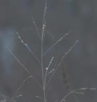
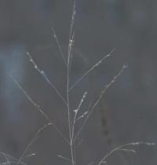
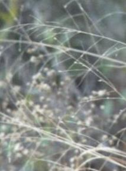

Saturday, December 06, 2003
Confession
I walked to the Charles River bike path yesterday. I needed something bracing and gratuitous and palpable to counteract the internet Christmas shopping that I'd done. Plus I thought I should get in a bit of exercise before the Northeaster hit, which, as predicted, it has and still is doing no end in sight.
So I looked at the beautiful nameless grass again, probably for the last time before its burial.
I would love to know its name.
Which brings me to my confession.
One of my favorite books is Weeds of the Northeast by Richard Uva, Joseph Neal and Joseph DiTomaso. It's a sturdily clothbound book, a beautiful green, and of a satisfying but not impossible heft. For each plant there is page of essential descriptive text, and a facing page of color photos. There are charts and tables and taxonomies, too, scientific matters that I've only begun to explore.
I bought it after we gave up on having a lawn. We have some remnant lawn, to be sure, but each year whole ecosystems of interesting plants compete with it and win. The overall effect is green, and up close it's fascinating: blue field madder, poor man's pepper, spotted spurge, broadleaf plantain, yellow hawkweed, shepherd's purse, corn speedwell, nutsedge, swallow-wort, nightshade, red clover, dandelions, chicory, asters, pigweed, ailanthus, wild pansy -- and, of course, crabgrass. And, of course, there was a poem in it.
On the last page of the weed book are four black and white photos -- the three authors, and and Andrew Senesac, who gave "invaluable" "cooperation" and "counsel."
My confession ? I have a serious crush on these men.
Mr Uva, a PhD candidate at Cornell when he wrote the book, is a young, dark-haired, intense looking man. He gazes at the camera with a determined, unsmiling expression, thin lips pressed firmly shut. The book has come from his Master's thesis.
Mr Neal, also young, was a professor at Cornell; in his picture, he looks pleased, almost amused. He has thick hair, and a brush mustache. His eyes twinkle as if with secret delight.
Mr DiTomaso is older, thin, slightly furrowed, darkly handsome. He smiles formally for the camera. He seems kind, wise and fatherly.
Mr Sesenec is blond, square faced; he has a high forehead, and wears enormous, clear-frmed glasses. In the photo, he's smiling. He appears content. Well-pleased.
Significantly, recursively, Mr Senesec appears on page 147 in the photo of a "Jerusalem Artichoke habitat." This weed, also called an earth-apple or a girasole, is a "tall, rhizomatous and tuberous perrennial," with, "aggressive" tendencies. Its tubers are edible. And, in the photo, the plant, sunflower-like, towers over Mr Senesec.
Except for a few fingers holding seelings, his is the only human presence in all the weedy photos of the book.
It is shocking, and strange. Andrew in a prospect of Artichokes.
I have a thing for serious, scientific men. I have long harbored a secret passion for the Army Corp of Engineers. Against all reason and politics. In my imagination, they still use slide rules. They have brief cases, and rolls of blueprints under their arms. In my imagination, they arrive on the scene of disasters, bristling with serious competence, and make things right. Or they engineer marvelous wonders, with monk-like dedication and single-mindedness. They are austere, and probably celibate.
The same goes for the CDC. You know the ones -- the men in chinos and blue oxford shirts with sleeves partly rolled up, who deplane on the tarmac of a plague-ridden city, brief cases in hand, ready to do serious epidemiology.
And hydrologists. The custodians of water. The builders of reservoirs and aqueducts, the purifiers of drinking water, the treaters of sewage. The tenders of the pumps and the pipes. These are noble men, too, with a grave calling. Just say the word "aquifer" and you will get a hint at what I mean.
As soon as I read Weeds of the Northeast I knew Drs. Uva, Neal, DiTomaso and Senesec were members of the same fraternity: serious scientific men. I must confess that, on my riverwalks, from time to time, I have imagined a tall, serious botanist emerging from the thicket -- usually Uva or Senesec -- as I crouch gazing at the beautiful, nameless grass.

He will squat beside me, and gravely inspect the plant, peering at its ligule, auricle and efflorescence, perhaps even pulling out a magnifying lens to look for hairs on the blade and sheath, and then, knowing, he will turn to me and tell me the name of the beautiful grass.
I will thank him. Nodding gravely, he will disappear into the woods.
All in a day's work.
So I looked at the beautiful nameless grass again, probably for the last time before its burial.
I would love to know its name.
Which brings me to my confession.
One of my favorite books is Weeds of the Northeast by Richard Uva, Joseph Neal and Joseph DiTomaso. It's a sturdily clothbound book, a beautiful green, and of a satisfying but not impossible heft. For each plant there is page of essential descriptive text, and a facing page of color photos. There are charts and tables and taxonomies, too, scientific matters that I've only begun to explore.
I bought it after we gave up on having a lawn. We have some remnant lawn, to be sure, but each year whole ecosystems of interesting plants compete with it and win. The overall effect is green, and up close it's fascinating: blue field madder, poor man's pepper, spotted spurge, broadleaf plantain, yellow hawkweed, shepherd's purse, corn speedwell, nutsedge, swallow-wort, nightshade, red clover, dandelions, chicory, asters, pigweed, ailanthus, wild pansy -- and, of course, crabgrass. And, of course, there was a poem in it.
On the last page of the weed book are four black and white photos -- the three authors, and and Andrew Senesac, who gave "invaluable" "cooperation" and "counsel."
My confession ? I have a serious crush on these men.
Mr Uva, a PhD candidate at Cornell when he wrote the book, is a young, dark-haired, intense looking man. He gazes at the camera with a determined, unsmiling expression, thin lips pressed firmly shut. The book has come from his Master's thesis.
Mr Neal, also young, was a professor at Cornell; in his picture, he looks pleased, almost amused. He has thick hair, and a brush mustache. His eyes twinkle as if with secret delight.
Mr DiTomaso is older, thin, slightly furrowed, darkly handsome. He smiles formally for the camera. He seems kind, wise and fatherly.
Mr Sesenec is blond, square faced; he has a high forehead, and wears enormous, clear-frmed glasses. In the photo, he's smiling. He appears content. Well-pleased.
Significantly, recursively, Mr Senesec appears on page 147 in the photo of a "Jerusalem Artichoke habitat." This weed, also called an earth-apple or a girasole, is a "tall, rhizomatous and tuberous perrennial," with, "aggressive" tendencies. Its tubers are edible. And, in the photo, the plant, sunflower-like, towers over Mr Senesec.
Except for a few fingers holding seelings, his is the only human presence in all the weedy photos of the book.
It is shocking, and strange. Andrew in a prospect of Artichokes.
I have a thing for serious, scientific men. I have long harbored a secret passion for the Army Corp of Engineers. Against all reason and politics. In my imagination, they still use slide rules. They have brief cases, and rolls of blueprints under their arms. In my imagination, they arrive on the scene of disasters, bristling with serious competence, and make things right. Or they engineer marvelous wonders, with monk-like dedication and single-mindedness. They are austere, and probably celibate.
The same goes for the CDC. You know the ones -- the men in chinos and blue oxford shirts with sleeves partly rolled up, who deplane on the tarmac of a plague-ridden city, brief cases in hand, ready to do serious epidemiology.
And hydrologists. The custodians of water. The builders of reservoirs and aqueducts, the purifiers of drinking water, the treaters of sewage. The tenders of the pumps and the pipes. These are noble men, too, with a grave calling. Just say the word "aquifer" and you will get a hint at what I mean.
As soon as I read Weeds of the Northeast I knew Drs. Uva, Neal, DiTomaso and Senesec were members of the same fraternity: serious scientific men. I must confess that, on my riverwalks, from time to time, I have imagined a tall, serious botanist emerging from the thicket -- usually Uva or Senesec -- as I crouch gazing at the beautiful, nameless grass.

He will squat beside me, and gravely inspect the plant, peering at its ligule, auricle and efflorescence, perhaps even pulling out a magnifying lens to look for hairs on the blade and sheath, and then, knowing, he will turn to me and tell me the name of the beautiful grass.
I will thank him. Nodding gravely, he will disappear into the woods.
All in a day's work.
Friday, December 05, 2003
Mr Fiberglass
Via the blackbox wonders of shareware (BME) I have converted a PICT file of Manny Bam Bam, AKA Fiberglass Cat, to an uploadable jpg file.

Dig the guilty skulk.
Dig the guilty skulk.
Stuff
Juggernaut’s a perfect word for Christmas: a massive, inexorable god-bearing cart under whose wheels devotees hurl themselves, and are crushed. Instead of Krishna/Vishnu, of course, it carries Santa Claus, avatar of Jesus.
I started today by thinking about stuff. The word stuff. Sounds like a good old Anglo Saxon monosyllable, but it’s actually ultimately from Latin -- stuppa -- meaning “tow” -- crude fiber, like the unravellings of an old rope, used to fill up holes and chinks.
I was thinking of the colloquial generic nominal use of “stuff”: things, as a fungible collective. Consumer goods. The Christmas shopping frenzy, after all, is upon us. Has been, since Halloween.
Then there’s the stuff of life, the stuff of the universe -- sub-atomic, quantal. The fiber out of which everything’s loomed. Stuff: we move from unraveled hemp to shopping to superstrings.
It’s getting colder, darker. A storm’s moving up the coast. Drafts slip along the inside walls of this old house like ghosts. I stuff old quilts around the air conditioner and wait for snow. Insulating, cocooning, preparing to hibernate.
One woman’s Juggernaut is another woman’s spring zephyr, I suppose.
I’ve always liked the word neurashthenia. I don’t hurl myself uder the juggernaut; I simply swoon, and it overtakes me.
Stuffing is both greedy and aversive: one fills up and takes in, in order to keep things out and fend things off.
What can I learn from my Christmas commerce aversion ? It’s easy to parlay it into a virtue: behold my non-greed, non-attachment. To which, of course, I am greedily attached. Partly, it’s a biological distate for crowds. Partly it’s disgust at the whole loud, ugly, manipulative and desperate circus of the marketplace.
But I think it’s also about the part of me that is ungenerous, unwelcoming and isolated. That is miserly, like Scrooge. That is so frightened about possible future privation, that it tends to hoard. That is anxious that it might be unloved for giving the wrong gift.
It’s time to unstuff. In every sense of the word.
I started today by thinking about stuff. The word stuff. Sounds like a good old Anglo Saxon monosyllable, but it’s actually ultimately from Latin -- stuppa -- meaning “tow” -- crude fiber, like the unravellings of an old rope, used to fill up holes and chinks.
I was thinking of the colloquial generic nominal use of “stuff”: things, as a fungible collective. Consumer goods. The Christmas shopping frenzy, after all, is upon us. Has been, since Halloween.
Then there’s the stuff of life, the stuff of the universe -- sub-atomic, quantal. The fiber out of which everything’s loomed. Stuff: we move from unraveled hemp to shopping to superstrings.
It’s getting colder, darker. A storm’s moving up the coast. Drafts slip along the inside walls of this old house like ghosts. I stuff old quilts around the air conditioner and wait for snow. Insulating, cocooning, preparing to hibernate.
One woman’s Juggernaut is another woman’s spring zephyr, I suppose.
I’ve always liked the word neurashthenia. I don’t hurl myself uder the juggernaut; I simply swoon, and it overtakes me.
Stuffing is both greedy and aversive: one fills up and takes in, in order to keep things out and fend things off.
What can I learn from my Christmas commerce aversion ? It’s easy to parlay it into a virtue: behold my non-greed, non-attachment. To which, of course, I am greedily attached. Partly, it’s a biological distate for crowds. Partly it’s disgust at the whole loud, ugly, manipulative and desperate circus of the marketplace.
But I think it’s also about the part of me that is ungenerous, unwelcoming and isolated. That is miserly, like Scrooge. That is so frightened about possible future privation, that it tends to hoard. That is anxious that it might be unloved for giving the wrong gift.
It’s time to unstuff. In every sense of the word.
Thursday, December 04, 2003
And Kitties

Grass Again

Beautiful Nameless Berries

Beautiful Nameless Seeds
Beautiful Nameless Grass

Wednesday, December 03, 2003
Albert O Albert
I was wrong. (Warning: I am about to snivel.)
I keep thinking the doc's going to say, "You're fine. Take that collar off, resume your life."
He did say Monday's CT showed the bone -- my pathetic, vegan, cracked-up, osteoporotic second cervical vertebra -- was healing.
But he said no flexion/extension neck xrays yet, and I must do a full 12 weeks in this friggin' rig.
(God, I love that GIF. DK assures me, speaking of brace fetishes, that he has yet to find anything erotic about my Aspen , AKA Albert DeSalvo Boston Strangler Collar.)
I can't tell you how depressing it was yesterday to phone up the Aspen company to order a "5-pack" of "chin pads."
Chin pads. Creepy. Like Kotex.
So it's three more weeks. I can do it.
But then I've got to, get this, WEAN off the collar. Slowly. As if it were a proverbial TEAT. Then do 6 weeks of physical therapy. Moi ? Physical ? Oy. Contra natura.
No work for 6 weeks. No driving still.
We won't even contemplate what will happen if the flexion extension views show instability. No we won't. Plus, and this is the doc not my denial speaking, they'll likely be fine.
OK. Buck up, old girl.
It could be way, way, way, way worse.
I keep thinking the doc's going to say, "You're fine. Take that collar off, resume your life."
He did say Monday's CT showed the bone -- my pathetic, vegan, cracked-up, osteoporotic second cervical vertebra -- was healing.
But he said no flexion/extension neck xrays yet, and I must do a full 12 weeks in this friggin' rig.
(God, I love that GIF. DK assures me, speaking of brace fetishes, that he has yet to find anything erotic about my Aspen , AKA Albert DeSalvo Boston Strangler Collar.)
I can't tell you how depressing it was yesterday to phone up the Aspen company to order a "5-pack" of "chin pads."
Chin pads. Creepy. Like Kotex.
So it's three more weeks. I can do it.
But then I've got to, get this, WEAN off the collar. Slowly. As if it were a proverbial TEAT. Then do 6 weeks of physical therapy. Moi ? Physical ? Oy. Contra natura.
No work for 6 weeks. No driving still.
We won't even contemplate what will happen if the flexion extension views show instability. No we won't. Plus, and this is the doc not my denial speaking, they'll likely be fine.
OK. Buck up, old girl.
It could be way, way, way, way worse.
Sunday, November 30, 2003
Consider the Toad

Philip Larkin, in his poem "Toads," asks
Why should I let the toad work
squat on my life ?
Can't I use my wit as a pitchfork
and drive the brute off ?
He concludes that something toadlike squats inside him, too, next to his "wit" -- a definate need for security -- and he suggests that the two qualities live in symbiosis. The toad would not seem so burdensome if there were no wit. The wit would not be so acerbic if there were no toad.
In a later poem, "Toads Revisited," the speaker is walking through the park one afternoon, not working, taking the air with such blighters as
wax-fleshed out-patients
still vague from accidents
and, becoming fearful of strings of empty, aimless days, concludes
Give me your arm, old toad;
help me down Cemetary Road.
One certainly can't accuse Mr Larkin of being overly perky. I laughed aloud today as I discovered "Toads Revisited," recognizing myself in the idle "wax-fleshed out-patient.../still vague from accident..."
I've been out of work and in the vice grip of the Albert DeSalvo/Gregor Samsa collar for two months now. There's a little Larkin in me, for sure. There's some truth in the wit/work symbiosis.
Tomorrow I have another CAT scan, a c-spine xray in flexion and extension -- will my head fall off and roll across the floor ? -- and a trip to the neurosurgeon for his verdict.
Here are few lines from Po Chu-i to counterbalance Larkin's (and my) dysphoric angst:
...
Joyful people resent fleeting days.
Sad ones can't bear the slow years.
It's those with no joy and no sorrow --
they trust whatever this life brings.
"After Lunch," trans David Hinton
graphics © 1999-2003
www.clipartconnection.com
Feline Mystery
There's nothing like a houseful of cats, in our case, four, to create a mystery.
Yesterday we noticed that Manny, our 2 year old boy (well, castratus) kitty, didn't show for breakfast. His two passions are breakfast and out. We searched high and low, and finally found him in a closet. Very unusual. So we called the vet. Must rule out urethral blockage, they said, and advised we go to a nearby veterinary ER.
There was no blockage, but manny was breathing at 60-80 per minute.
They did an xray and some tests and concluded it was an asthmatic type reaction, and decided to keep him overnight.
Last night DK found chunks of fiberglass on the living room rug.
Backstory: our basement is half finished, and gives way to the unfinished cellar through a louvered door which closes with a hook-and-eye. The house is 113 years old, and the previous owners were not known for the robustness of their house maintenance. The front stone wall of the cellar was boarded over, poorly insulated, contained a broken window somewhere behind the wallboard, and last winter, got so cold that the water pipe into the house froze and split.
So we just had someone fix the window, repoint the concrete between the stones -- not an easy task, as the outside wall is under the verandah -- and pack in more insulation inside. He didn't replace the wall board, so it's basically insulation strips visible down there.
The last time I went into the "cellar" was Friday. It's a strict no-kitty zone. I saw no kitties accompany me, for whatever that's worth. DK doesn't think he went in there after me.
We THINK we saw Manny Friday night.
Saturday was when he began to act strange.
So after DK found the fiberglass on the rug upstairs, I went down into the cellar and, in the middle of the floor was a huge chunk -- 2 feet by 2 feet at least -- of fiberglass, of such heft that I'm nearly positive I would have noticed it immediately on Friday had it been there then.
So.
Did the kitty somehow get stuck in the basement, rip a chink of fiberglass out of the wall, inhale it and become ill ?
How did he get in ?
How did he get out ?
Is the fiberglass just a pink herring, and the kitty has simply become asthmatic ?
Was some other animal trapped under the verandah and somehow got into the wall and into the cellar ?
Poor kitty.
Poor us (seven hundred bucks later.) Not to mention the bazillion pills a day we have to insert into the kitty. And the new, byzantine kitty litter we must use.
Bad kitty.
The first thing Mannydid on returning home today was run downstairs and lie down in front of the louvered door.
I guess we've found his third passion -- fiberglass.
Looks like cotton candy... (cue Homer Simpson tape -- "Fiberglass, mmmmgggmmmgmgmgmgmeeooowww !!!)
Yesterday we noticed that Manny, our 2 year old boy (well, castratus) kitty, didn't show for breakfast. His two passions are breakfast and out. We searched high and low, and finally found him in a closet. Very unusual. So we called the vet. Must rule out urethral blockage, they said, and advised we go to a nearby veterinary ER.
There was no blockage, but manny was breathing at 60-80 per minute.
They did an xray and some tests and concluded it was an asthmatic type reaction, and decided to keep him overnight.
Last night DK found chunks of fiberglass on the living room rug.
Backstory: our basement is half finished, and gives way to the unfinished cellar through a louvered door which closes with a hook-and-eye. The house is 113 years old, and the previous owners were not known for the robustness of their house maintenance. The front stone wall of the cellar was boarded over, poorly insulated, contained a broken window somewhere behind the wallboard, and last winter, got so cold that the water pipe into the house froze and split.
So we just had someone fix the window, repoint the concrete between the stones -- not an easy task, as the outside wall is under the verandah -- and pack in more insulation inside. He didn't replace the wall board, so it's basically insulation strips visible down there.
The last time I went into the "cellar" was Friday. It's a strict no-kitty zone. I saw no kitties accompany me, for whatever that's worth. DK doesn't think he went in there after me.
We THINK we saw Manny Friday night.
Saturday was when he began to act strange.
So after DK found the fiberglass on the rug upstairs, I went down into the cellar and, in the middle of the floor was a huge chunk -- 2 feet by 2 feet at least -- of fiberglass, of such heft that I'm nearly positive I would have noticed it immediately on Friday had it been there then.
So.
Did the kitty somehow get stuck in the basement, rip a chink of fiberglass out of the wall, inhale it and become ill ?
How did he get in ?
How did he get out ?
Is the fiberglass just a pink herring, and the kitty has simply become asthmatic ?
Was some other animal trapped under the verandah and somehow got into the wall and into the cellar ?
Poor kitty.
Poor us (seven hundred bucks later.) Not to mention the bazillion pills a day we have to insert into the kitty. And the new, byzantine kitty litter we must use.
Bad kitty.
The first thing Mannydid on returning home today was run downstairs and lie down in front of the louvered door.
I guess we've found his third passion -- fiberglass.
Looks like cotton candy... (cue Homer Simpson tape -- "Fiberglass, mmmmgggmmmgmgmgmgmeeooowww !!!)


{kind=link}